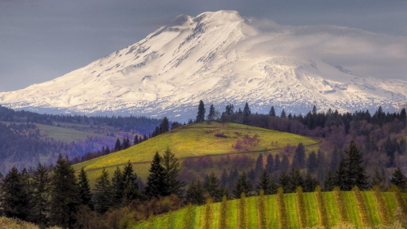

А КАКАЯ ОНА.. ПРИРОДА РОССИИ?
При огромном протяжении Российской Федерации растительность ее чрезвычайно разнообразна. При этом постепенное изменение климата по направлению с севера на юг определяет смену ботанических областей, отличающихся, главным образом, общей физиономией своих формаций. Огромное же протяжение этих областей по направлению меридиана обусловило разнообразие в их составе, так как они заимствовали своих членов из разных растительных центров.